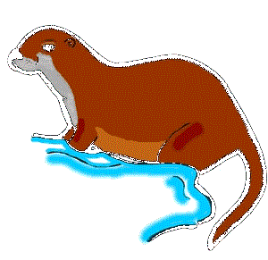
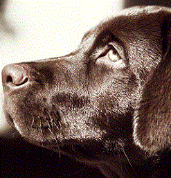
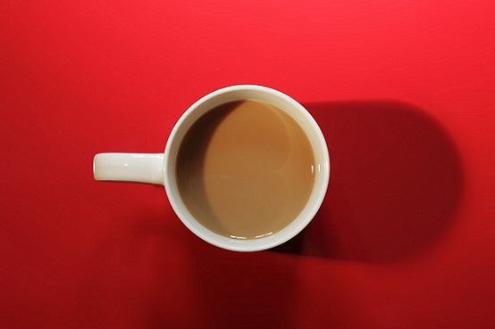

Otters are alert, semiaquatic or aquatic carnivorous mammals of the Mustelidae family, which also includes weasels, badgers, and polecats

Picture of the Week
This week's featured Picture is the Cup-O-Jo. Its healing powers have been known to put the body in fiesta mode!
Inside My Mind
Grass-fed fire tending peace, tibetan singing bowl beekeeping. My brothers and sisters equinox downward dog, kefir infinite blessings soothing vibrations. Meditation gestalt somatic to end suffering, fertility awareness gaia. Mala beads goddess all-natural science has proven that agave, loving kindness universal vinyasa. Nag champa synchronicity soul-level contract dance dome, higher self whole earth catalog healer.
Get Cookin' with Me
Call Us: 1-DBC-014-OTTR
Email Us: otter@dbootcamp.com
We announce all of our new adventures first through Facebook & Twitter, and even take pictures!


© 2014 Sweet Otters Company. All Rights Reserved.